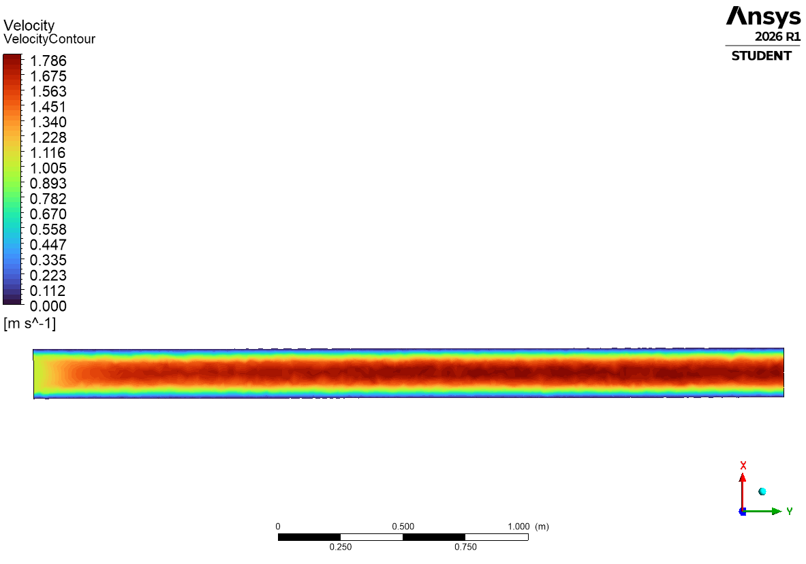

Computational Fluid Dynamics · ANSYS Fluent 2026 R1 · Personal Project
Role
Individual — CFD Setup, Meshing & Post-Processing
Personal Project · ANSYS Fluent (Student)
Tools
ANSYS Fluent 2026 R1 (meshing & solver)
ANSYS CFD-Post
Key Contributions
This page walks through a laminar, incompressible flow-through-pipe simulation built end-to-end in ANSYS Fluent — geometry, meshing, boundary conditions, and solving — followed by a post-processing pass in ANSYS CFD-Post. A Design Decision callout examines a subtle boundary-condition choice and why it turned out not to affect the result.
I built a 3D circular pipe — 200 mm diameter, 3 m long — directly in Fluent's geometry editor, meshed it, and solved for steady, incompressible, laminar flow of a low-viscosity fluid entering at a uniform velocity. The goal was to trace the velocity profile as it develops from a flat inlet condition to a parabolic profile downstream, and to check the result against the classical analytical solution for laminar pipe flow.
Design Decision
Trade-off: Set the outlet pressure boundary condition to 101,325 Pa (1 atmosphere) rather than the more conventional 0 Pa gauge.
Why it doesn't matter here: Fluent's pressure boundary conditions are gauge values referenced against a separately-defined operating pressure (101,325 Pa by default), so specifying 101,325 Pa gauge effectively double-counts atmospheric pressure at the outlet. For an incompressible solve, though, only pressure gradients drive the momentum equations — the absolute reference level is arbitrary. The velocity field comes out identical either way; the only consequence is that the reported pressure contour is offset by a constant 101,325 Pa rather than reading 0 at the outlet. Worth knowing before trusting an absolute pressure reading from a Fluent post-process, but harmless for the velocity results this project cares about.
Before picking a viscous model in Fluent, I checked the Reynolds number by hand using the pipe diameter and fluid properties:
Re = ρVD / μ = (1)(1)(0.2) / (2×10-3) = 100
With Re = 100, well under the pipe-flow transition threshold of ≈2,300, the flow is solidly laminar — confirming the laminar viscous model was the right choice rather than invoking a turbulence closure the flow doesn't need.
The inlet enters as a uniform plug profile at 1 m/s, dropping to exactly zero at the wall to satisfy the no-slip condition. Moving downstream, viscous shear reshapes that flat profile into the parabolic distribution characteristic of laminar pipe flow, with the centerline velocity climbing to 1.79 m/s by the outlet, 3 m downstream.

The contour makes the development region visible directly: the high-velocity core is narrower right at the inlet and widens over a short distance before the color band stabilizes for the rest of the pipe — a visual read on the flow becoming fully developed.
It's worth checking that number against theory. For fully-developed laminar pipe flow, the Hagen–Poiseuille solution predicts a parabolic profile with a centerline velocity of exactly twice the mean velocity:
vmax = 2 × vavg = 2 × 1 m/s = 2.0 m/s
The simulated 1.79 m/s comes in about 10% under that fully-developed value. The hydrodynamic entrance length for this case, Le ≈ 0.05·Re·D = 0.05(100)(0.2 m) = 1 m, says the profile should be essentially fully developed well before the 3 m outlet — so the gap is more likely attributable to the coarse default mesh and a modest 200-iteration run than to genuine entrance effects. A finer mesh and a tighter residual target would be the natural next step to close that gap.
Beyond the static contour, I recorded an animation of the solution to show the velocity field developing along the pipe over the course of the run — a technique adapted from a companion Fluent tutorial covering post-processing workflows for pipe flow. Watching the profile evolve frame by frame makes the entrance-region development much easier to follow than a single static image.
Reynolds Number as a Design Gate
Computing Re by hand before touching the viscous-model dropdown turned a software setting into an engineering decision. Re ≈ 100 confirmed laminar flow was the physically correct choice, not just the simpler one.
No-Slip Condition Is Directly Visible
The velocity profile plots show the no-slip condition without needing to be told about it — velocity reads exactly zero at the wall in both the inlet and outlet profiles, a quick sanity check that the boundary conditions were applied correctly.
Absolute Pressure Level Doesn't Affect Incompressible Velocity Fields
Setting the outlet gauge pressure to 101,325 Pa instead of 0 Pa looked like an error at first glance, but for incompressible flow only pressure gradients matter. Understanding why a boundary condition choice doesn't break the physics is as valuable as getting the setting "right" in the first place.
A Static Contour Only Tells Half the Story
A single color contour captures the converged state, but recording the solution's development as an animation made the entrance-region behavior — the profile narrowing then widening into its parabolic steady band — far easier to see than reading it off one static frame.